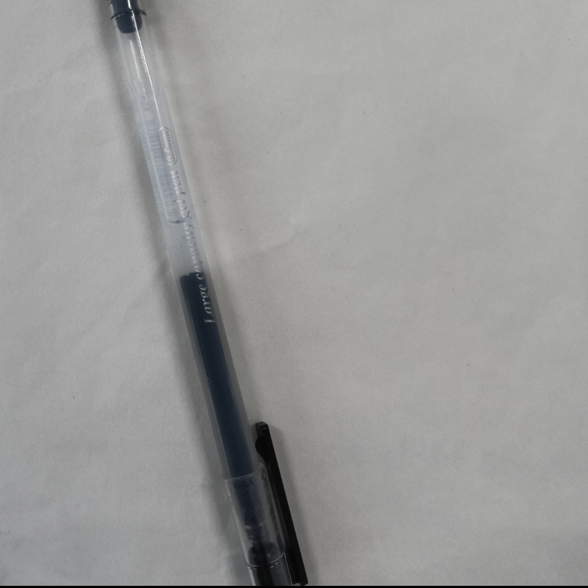

加载中，请稍候...
案件详情
我的«c++ primer plus»的45页的中偏右下部分被划了一笔
作案人：Jiieoo.(头像没时间做，下个月一定)
被害物品：«c++ primer plus»
作案工具

Tank37135对此的评价:划我最爱的书籍，有话难说
作案人说话
body { background: linear-gradient(90deg, #edc0bf 0%, #c4caef 58%); }